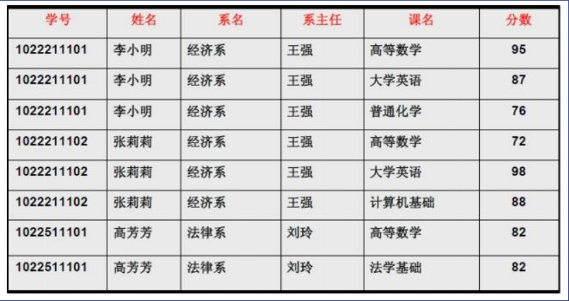
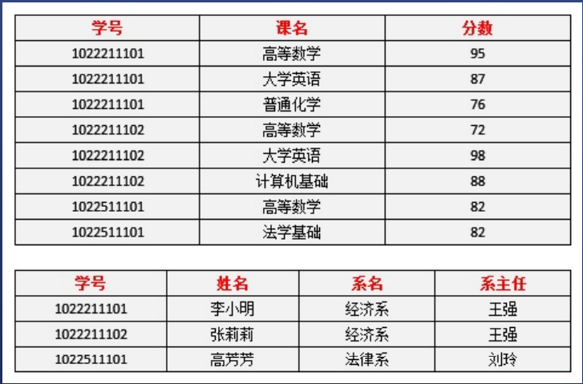
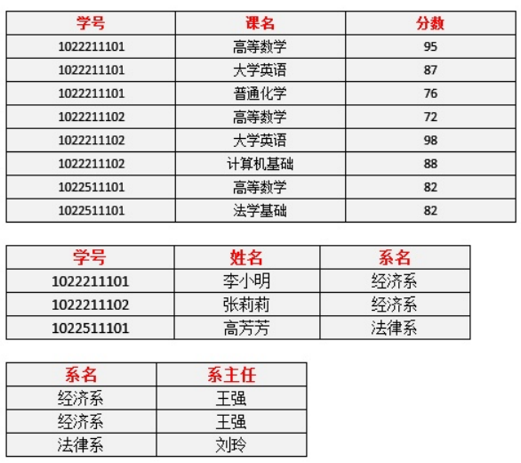
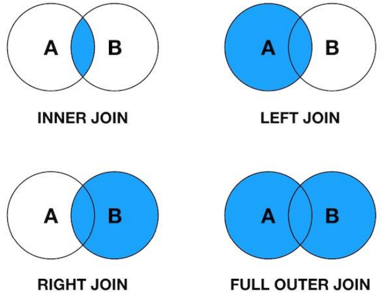

数据库基础
1 第一二三范式
1 第一范式 1NF
-
定义：字段不可再分
-
举例：存储体检者的双眼视力，应分为左眼视力和右眼视力两个字段
即user表里应有
left_eye和right_eye，而不能存为一个字段 -
缺点：

这是一个学生选课表，没有违反第一范式，但是存在如下问题：
数据冗余、创建系时插入异常、删除学生会导致系消失、学生转系时改动多处
结论：第一范式不够强
2 第二范式 2NF
-
定义：
- 在1NF的基础上，要有键（键可由多个字段组合）
- 所有字段必须分别完全依赖于键
- 如果键是多个字段组合，则不允许部分依赖于该键
-
依赖关系：
- 给出键，就能唯一确定字段的值
- 如给出学号，就能唯一确定姓名，反之则不行
- 则称姓名依赖于学号
-
不满足第二范式的地方：
- 上表的键为（学号、课名）
- 但存在部份依赖：姓名依赖与学号
-
改进：
- 选课表（学号，课名，分数）
- 学生表（学号，姓名，系名，系主任）

3 第三范式 3NF
-
定义：
- 一个表里不能有两层依赖
- 给出学号，就能确定系名——系名依赖于学号
- 给出系名，就能确定系主任——系主任依赖与系名
- 所以，系主任间接依赖于学号
-
解决办法：
- 把系名和系主任单独建表

4 BC范式
- 键中的属性也不存在间接依赖
2 设计表
1 数据库设计经验
-
高内聚
- 把相关字段放到一起，不相关的单独建表
- 如果两个字段能够单独建表，那就单独建表
-
低耦合
- 如果两个表之间有弱关系
- 一对一可放在一个表，也可两个表加外键
- 一对多一般用外键
- 多对多一般建中间表
- 如果两个表之间有弱关系
2 一对一
-
假设一个学生只能加入一个班级
-
可以把班级放在学生表中
- 学生id：1001，姓名：小明，班级id：4002
- 班级id：4002，名称：入门1班
-
也可以单独建立关联表
- 学生id：1001，姓名：小明
- 学生班级关联表：id：2003，学生id：1001，班级id：4002
- 班级id：4002，名称：入门1班
3 一对多
- 假设一个作者能写多本书
- 可以把书放到作者表里
- 某些DBMS支持数组，可以存两个id到一个字段
- 作者id：1001，姓名：大牛，books：[2001，2002]
- 如果不支持数组，就不能这样做了
- 单独建立关系表（推荐）
- 作者id：1001，姓名：大牛
- 出版图书表：：id：2001，作者id：1001，书id：4002，出版社id：xxx
- 出版图书表：：id：2002，作者id：1001，书id：4003，出版社id：xxx
- 书id：4002，名称：js入门
4 多对多
- 假设一个学生可以加入多个班级，每个班级也能有多个学生
- 把班级放到学生表中：DBMS支持数组的话可以，否则不可以
- 单独建立关系表（推荐）：
- 学生id：1001，姓名：小明
- 学生班级关系表：id：2001，学生id：1001，班级id：4002，有效期：xxx
- 学生班级关系表：id：2002，学生id：1001，班级id：4003，有效期：xxx
- 班级id：4002，名称：入门班
5 什么时候建关联表
- 当关联自身存在属性时
- 比如关联的有效期，有效期为一年
- 比如关联的级别，店铺会员分为vip1-6
3 JOIN把表连接起来
- 连接表
- inner join
- left join：会保留右边的null，以保证左边都显示
- right join：会保留左边的null，以保证右边都显示
- full outer join：保留两边的null，以保证两边都显示
- 看图巧记

- 语法
SELECT A.PK AS A_PK, B.PK AS B_PK,
A.VALUE AS A_VALUE, B.VALUE AS B_VALUE
FROM Table_AA INNER JOIN Table_BB
ON A.PK = B.PK
- 尝试（以inner join为例）：
// 用docker启动mysql，或者重新docker run一遍
docker container start mysql1
// 进入mysql
docker exec -it mysql1 bash
mysql -u root -p
123456
// 创建数据库
create database db1 character set utf8mb4 collate utf8mb4_unicode_ci;
show databases;
use db1;
// 创建表
create table users(id serial,name text);
create table staffs(id serial,name text);
create table orders(id serial,user_id bigint unsigned,staff_id bigint unsigned amount int unsigned);
// 创建记录
insert into users (name) values ('XiaoMing');
+----+----------+
| id | name |
+----+----------+
| 1 | XiaoMing |
+----+----------+
insert into staffs (name) values ('XiaoHong');
+----+----------+
| id | name |
+----+----------+
| 1 | XiaoHong |
+----+----------+
insert into users (user_id, staff_id, amount) values (1,1,100);
+----+---------+----------+--------+
| id | user_id | staff_id | amount |
+----+---------+----------+--------+
| 1 | 1 | 2 | 100 |
+----+---------+----------+--------+
// 使用inner join
select users.name as unname,orders.amount as amount
from users inner join orders
on users.id=orders.user.id;
// 得到XiaoMing 100
+----------+--------+
| uname | amount |
+----------+--------+
| XiaoMing | 100 |
+----------+--------+
4 缓存字段
-
假设一个博客blog包含多个评论comments
-
如何获取博客的评论数
select count(id) from comments where blog_id=1 -
更好的办法是在blog表中添加
comment_count字段，每次添加comment则+1，每次删除comment则-1 -
这样就可以快速获取博客的评论数，约定缓存字段均使用
_count结尾
5 事务
-
有些操作必须一次完成
- 用户评论之后，首先要在comments表中新增记录，其次在blogs表将对应的comment_count+1
- 如果第一步执行了，第二步没有执行，那么数据就乱了
-
使用事务
6 MySQL储存引擎
-
命令
show engines; -
常见
- innoDB-默认，是事务型数据库的首选，支持事务，遵循ACID、支持行锁和外键；
- MyISAM-拥有较高的插入查询速度，但不支持事务
- Memory-内存中，快速访问数据
- Archive-只支持insert和select
7 索引
-
语法
create unique index index1 on users(name(100)); show index in users; -
用途
- 提高搜索效率
- where xxx > 100 那么我们可以创建xxx的索引
- where xxx > 100 and yyy > 200，可以创建xxx，yyy的索引
最后修改于 2021-07-05